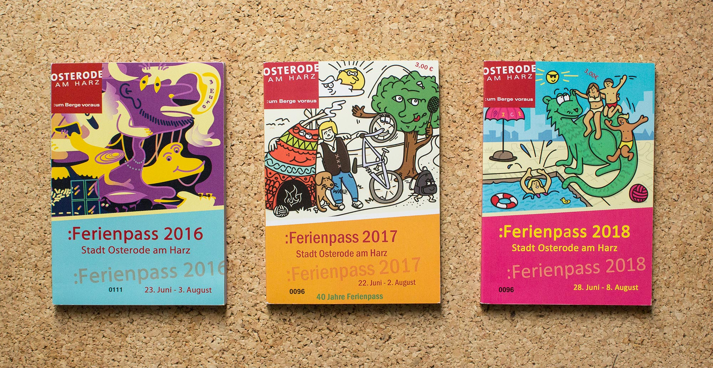
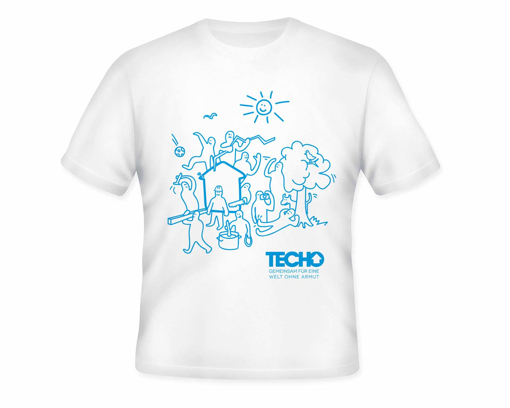
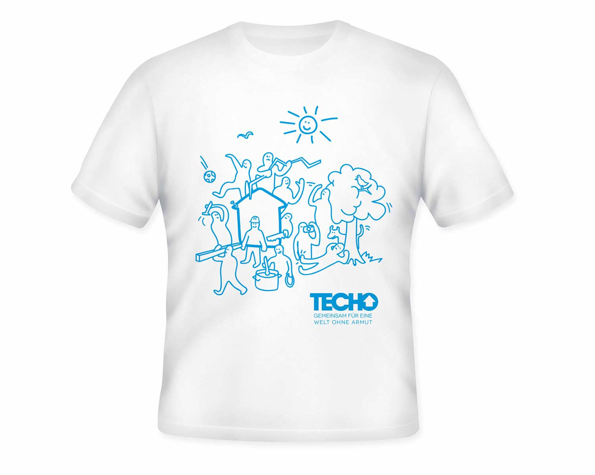
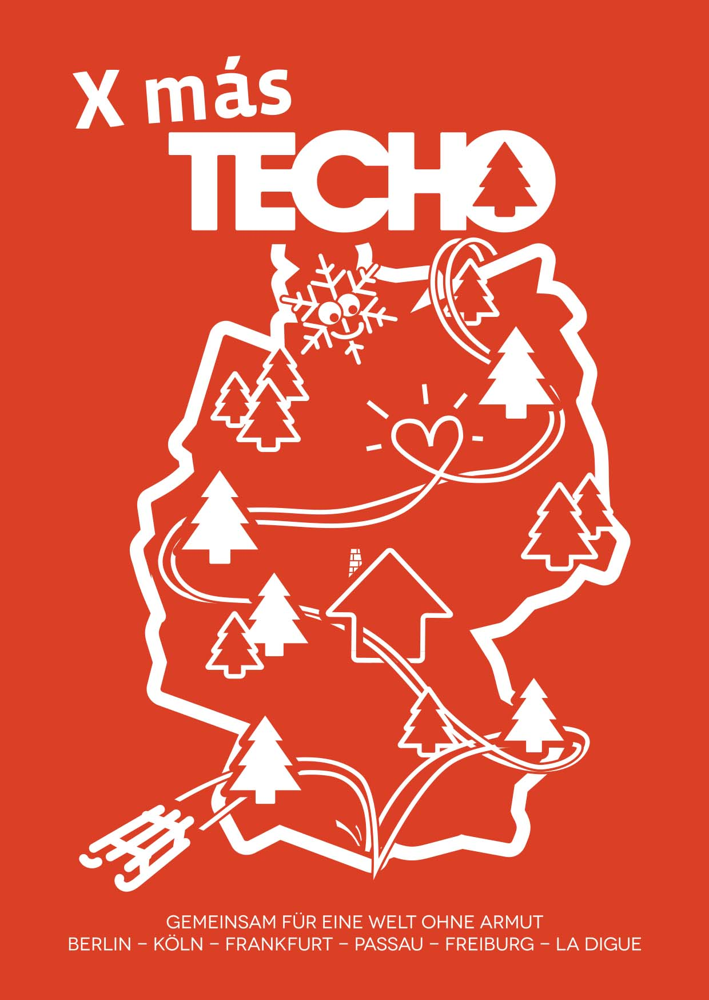
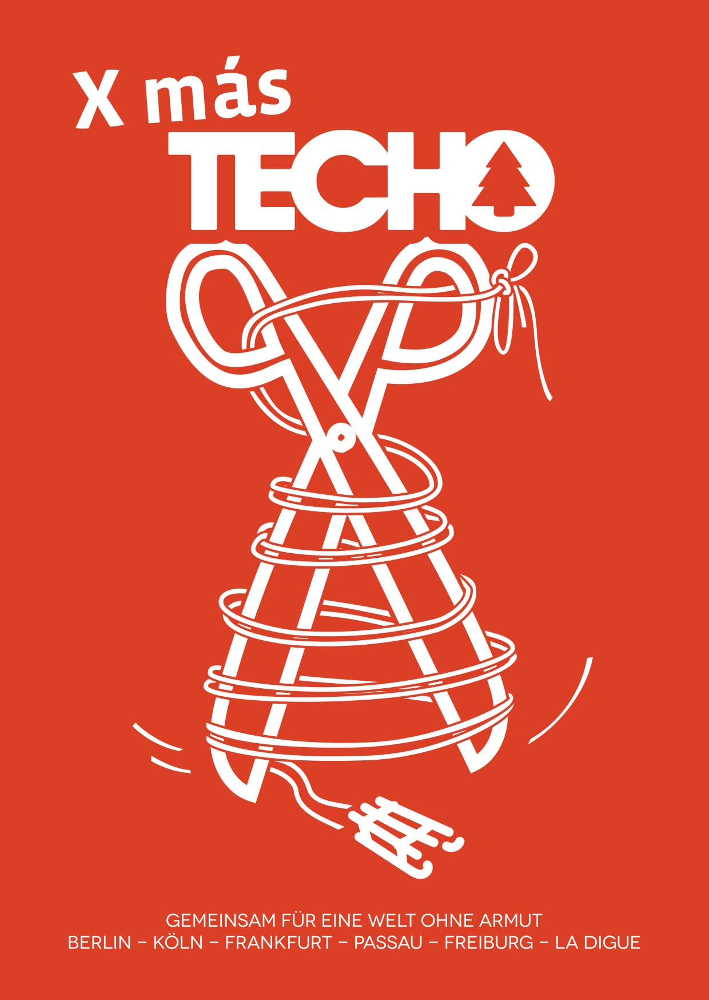

Juni 2017 - Bremen x Leipzig
Pullover mit ACID Stitch
Mein Freund QNETE betreibt mit seiner Freundin das Modelabel Can't Decide in Leipzig. Seit kurzem sind sie im Besitz einer professionellen Stickmaschine und zaubern damit neben Auftragsarbeiten ihre Genre-Pullis - das ACID Design durfte ich übernehmen. Erhältlich im Shop des Robert Johnson, online oder in Frankfurt.
Foto: Can't Decide
Model: Paul
{kind=link}
{kind=link}
2013 — 2018 - Osterode am Harz
Ferienpass Illustrationen für Osterode
Für meine Heimatstadt Osterode gestalte ich seit 2013 die Cover-Illustrationen des alljährlichen Ferienpasses, in dem schulferienüberbrückende Aktionen angeboten werden. Die Ausgaben 2016 bis 2018 sind im Bild unten zu sehen.
{kind=link}
2016 - Bremen
Ehrenamtlich bei TECHO
Aus meiner Zeit, die ich mit den Jungs und Mädels von TECHO Deutschland gearbeitet habe, trage ich einige schöne Erinnerungen und Bekanntschaften davon. Wer TECHO nicht kennt:
"Un techo para mi país" (dt. „Ein Dach für mein Land“), in Chile gegründete NGO und Hilfsorganisation, in Krisen- und Katastrophengebieten tätig, dessen europäische Ableger gegen die Missstände - mittlerweile - in der ganzen dritten Welt Spenden sammeln.
Ein persönlicher Meilenstein ist zum Beispiel das schöne Team-Shirt. Die Illustration erinnert mich heute noch immer wieder an die Atmosphäre während meines Sommereinsatzes mit TECHO in Panguipulli, Chile.
 

{kind=link}
Ende 2015 haben wir in einer 6er-Gruppe eine Weihnachtskampagne hochgezogen die Events, Postkarten und die Website einer sich wöchentlich entfaltenden Haiti-Erdbeben-Geschichte, sowie Spendenaufrufe, Facebook-Posts und letztendlich eine Publikation vom Kampagnenergebnis beinhaltete. Auch hier waren Layouts und Grafiken gefragt, die ich gut und gerne zeige.
 {kind=link}
{kind=link}